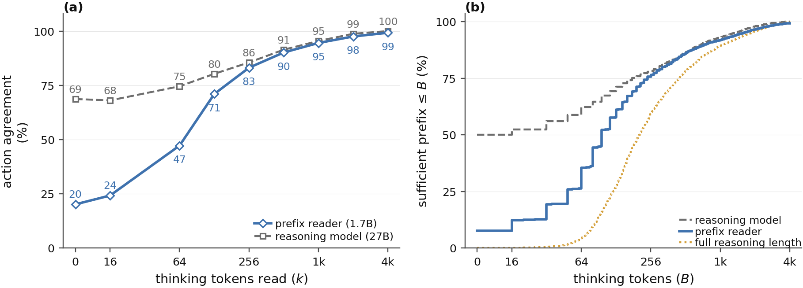
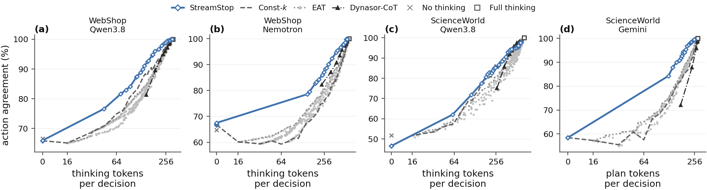
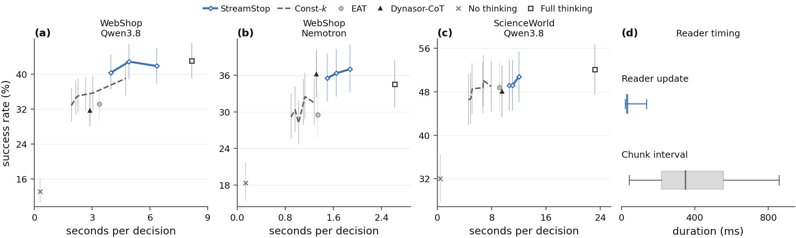
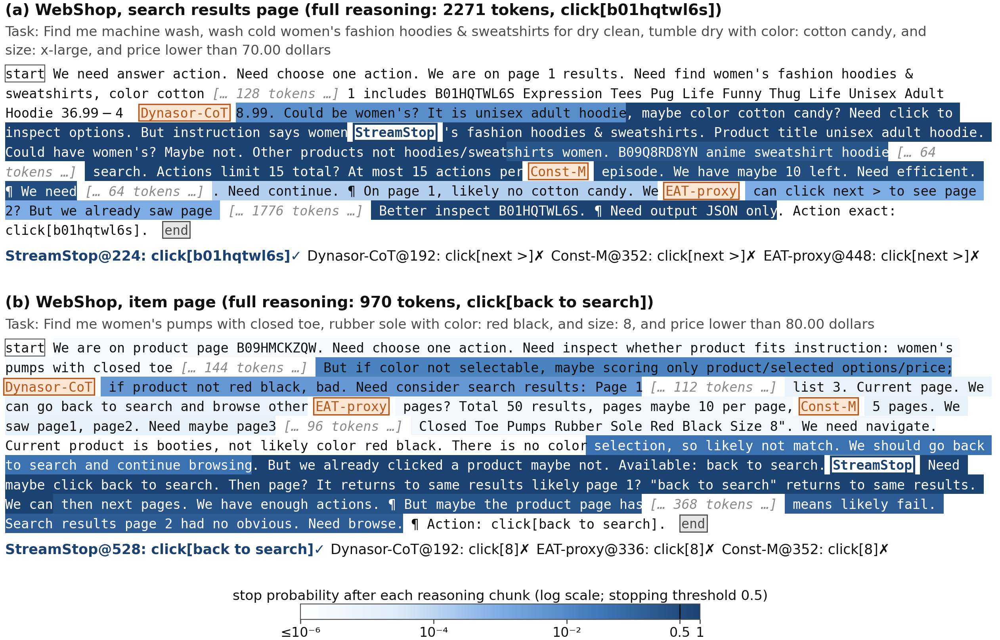

How much reasoning does one decision need?
An agent reasons before every action, and the reasoning it needs varies from decision to decision. A fixed thinking budget is therefore a guess: too short, and the action changes; too long, and the agent spends tokens and seconds that do not change what it does. The right question is not how long the model reasons on average but at which point of this reasoning stream the action is already settled.

A small reader decides when the reasoning is enough
The reasoning model \(\mathcal M\) streams its reasoning in chunks. After each chunk a frozen prefix reader \(\mathcal R\) encodes the prefix read so far, and a lightweight stop head \(\pi_\theta\), conditioned on a discount factor \(\gamma\), makes one binary call:
The head is trained offline, with no rollouts and no gradients through either language model. Every prefix \(t\) of a recorded trajectory \(\xi\) is labelled with whether the action generated from it agrees with the full-reasoning action, \(y_t\in\{0,1\}\), and the discounted agreement of a stopping policy is summed exactly over the finitely many stopping times, with \(q_t\) the probability of first stopping at prefix \(t\):
\(\gamma\) is an input, not a hyperparameter: one head trained with \(\gamma\) sampled from a range covers a whole family of trade-offs, and at deployment the choice is a single number. Lower \(\gamma\) stops earlier; higher \(\gamma\) waits for more agreement.
![Left: during agent interaction the frozen reasoning model streams reasoning chunks; a frozen prefix reader encodes the public context and the available prefix into features; a trainable stop head conditioned on the discount factor outputs WAIT or STOP; on STOP the reasoning model generates the action from the current prefix. Right: on a recorded trajectory every prefix is annotated with whether its action agrees with the full-reasoning reference action, and the stop head is trained on the exact expected discounted agreement over stopping times.](media/overview.png)

Results
Closed-loop task success on the test sets against the existing stopping rules. The proxy-signal methods rank differently from one reasoning model to the next: EAT is strong on Gemini and weak on Qwen3.8, Dynasor-CoT the other way round on Nemotron. StreamStop stays within three points of Full thinking in every configuration while reading 18–52% fewer reasoning tokens, and on WebShop it beats every other stopping rule by a wide margin.
| Method | WebShop Qwen3.8-27B | WebShop Nemotron-30B | ScienceWorld Qwen3.8-27B | ScienceWorld Gemini 3.1 FL | ||||
|---|---|---|---|---|---|---|---|---|
| success % | tok/ep | success % | tok/ep | success % | tok/ep | success % | tok/ep | |
| Full thinking (reference) | 43.0 | 5,945 | 34.5 | 5,374 | 52.1 | 45,380 | 47.1 | 10,980 |
| No thinking | 13.2 | 0 | 18.3 | 0 | 32.0 | 0 | 39.9 | 0 |
| Const-M (matched budget) | 35.7 | 2,119 | 32.5 | 1,599 | 50.1 | 12,562 | 45.4 | 6,500 |
| EAT | 33.2 | 2,369 | 29.5 | 2,035 | 48.8 | 15,095 | 49.2 | 8,596 |
| Dynasor-CoT | 31.7 | 2,082 | 36.2 | 2,338 | 48.1 | 17,868 | 44.6 | 7,718 |
| StreamStop, γ = 0.98 | 40.3 | 2,675 | 35.5 | 2,693 | 49.2 | 20,757 | 47.1 | 8,757 |
| StreamStop, γ = 0.99 | 42.8 | 3,464 | 36.3 | 3,263 | 49.2 | 21,665 | 46.1 | 8,977 |
| StreamStop, γ = 0.995 | 41.8 | 4,540 | 37.0 | 3,727 | 50.8 | 23,680 | 47.0 | 9,183 |
Test-set means over three evaluation seeds (Gemini: eight). tok/ep = reasoning tokens per episode; for Gemini they are explicit-plan tokens in reader-token units. Underlined: best success among the stopping rules (Full thinking excluded). Const-M stops after a per-setting token count chosen on the validation set to match StreamStop's mean consumption at γ = 0.99; EAT and Dynasor-CoT use one setting across all environments. Standard deviations across seeds and the remaining baseline settings are in the paper's Table 2.
Fewer tokens is also less time

Fast is not the same as right
Stopping early is only useful if the action survives. In the episode below the fixed budget stops after 352 tokens every time and buys the wrong shirt in 32 s; StreamStop keeps reading when the reasoning is still undecided and spends 102 s, but buys the right one, as Full thinking does in 246 s.
What the stop head reads
The head's stop probability stays near zero through exploration and rises once the reasoning has committed to a plan. Below, two validation decisions in WebShop: the full reasoning is shown with the stop probability after each chunk as shading, and the point at which each method stops is marked with the action it then takes.

A dataset of reasoning prefixes with their actions
Training and evaluating a stopping rule offline needs something ordinary agent logs do not have: the action the model would have taken from each earlier prefix. We recorded it. For every reasoning stream in the collection, the reasoning model was asked to act from a grid of prefix lengths, so stopping rules can be compared on agreement and tokens without any new generation or environment rollout.
| Collection (training and validation tasks, four environment–model pairs) | Count |
|---|---|
| Episodes | 11,194 |
| Non-empty reasoning streams (decision attempts) | 123,819 |
| Prefix-action annotations | 2,096,816 |
Unsuccessful episodes and invalid action responses are kept. Each record carries the task and public context, the full reasoning text, the full-reasoning action, and per-prefix generated actions with parser results. The release is planned together with the code.